Lesson 8
Calcolo numerico per la generazione di immagini fotorealistiche
Maurizio Tomasi maurizio.tomasi@unimi.it
Geometric Shapes
«Cornell box»

Rendering Equation
To solve the rendering equation, we need to trace the path of light rays in three-dimensional space and evaluate the integral in:
\begin{aligned} L(x \rightarrow \Theta) = &L_e(x \rightarrow \Theta) +\\ &\int_{4\pi} f_r(x, \Psi \rightarrow \Theta)\,L(x \leftarrow \Psi)\,\cos(N_x, \Psi)\,\mathrm{d}\omega_\Psi, \end{aligned}
The integral is evaluated over the solid angle, but for some algorithms it might be more convenient to iterate over objects, not solid angles.
We now show an alternative formulation that introduces some important new concepts.
Alternative Form
Let’s focus on the most complex term of the equation, i.e., the integral:
\int_{4\pi} f_r(x, \Psi \rightarrow \Theta)\,L(x \leftarrow \Psi)\,\cos(N_x, \Psi)\,\mathrm{d}\omega_\Psi.
The integral is evaluate over the full solid angle 4π, and its physical meaning is to take into account the radiation falling on point x of a surface.
This radiation originates from a surface element \mathrm{d}\sigma' on the scene, corresponding to a point x' in space (see the following figure).
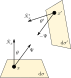
Alternative Form
By definition of solid angle, therefore, \mathrm{d}\omega_\Psi is written as follows:
\mathrm{d}\omega_\Psi = \frac{\mathrm{d}\sigma'\,\cos\theta'}{\left\|x - x'\right\|^2}.
The integral term of the rendering equation can therefore be rewritten as follows, where \sum S indicates all surfaces visible from x:
\int_{\sum S} f_r(x, \Psi \rightarrow \Theta)\,L(x \leftarrow x')\,\frac{\cos\theta\,\cos\theta'}{\left\|x - x'\right\|^2}\mathrm{d}\sigma',
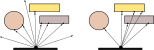
Visibility Function
To account for occlusions, a visibility function v(x, x') is usually introduced, defined as follows:
v(x, x') = \begin{cases} 1\ &\text{ if $x'$ is visible from $x$,}\\ 0\ &\text{ if $x'$ is not visible from $x$.} \end{cases}
In this way, the integral is rewritten over the entire set of points x':
\int_{\forall x' \in \sum S} f_r(x, \Psi \rightarrow \Theta)\,L(x, x - x')\,\frac{\cos\theta\,\cos\theta'}{\left\|x - x'\right\|^2}\,v(x, x')\,\mathrm{d}\sigma'.
Rays and Geometric Shapes
We see that in a ray-tracing code it is necessary to be able to perform these calculations:
- Intersection between a ray and a surface;
- Determination of the visibility function v(x, x') between two points.
These two problems can be solved in a very similar way, and that is what we will see in today’s lesson.
Ray/Shape Intersections
Representation of Shapes
In a ray-tracer, surfaces are represented by analytical equations.
The intersection between light rays and shapes is calculated using the rules of analytic geometry:
- Rays and shapes are represented as equations where the unknown is the point (x, y, z) in space.
- The system of equations for the ray and for the shape is solved, in order to find the points (x, y, z) common to both equations.
Thanks to our implementation of affine transformations, we can implement only the simplest shapes, which can then be modified through concatenations of transformations.
Transformations
Usually geometric shapes are expressed in complex forms; for example, the unit sphere is represented by an implicit equation:
x^2 + y^2 + z^2 = 1.
However, while we can easily apply T to
PointandVec, applying it directly to an implicit equation is often impractical.It is more convenient to apply the inverse transformation to the light rays: if T transforms the “privileged” reference frame of a shape into the real world system, T^{-1} can transform a ray O + t \vec d in the real world system into the privileged one of the shape.
Transforming Rays
Let T be the transformation applied to surface S. The transformed surface T\cdot S is then the set of points
T\cdot S = \left\{T x: x \in S\right\},
If the ray O + t \vec d intersects T\cdot S at \textcolor{#2826a3}{\tilde x} when t = \textcolor{#2826a3}{\tilde t}, then
O + \textcolor{#2826a3}{\tilde t} \vec d = T \textcolor{#2826a3}{\tilde x},\ \Rightarrow\ T^{-1} O + \textcolor{#2826a3}{\tilde t}\,T^{-1} \vec d = \textcolor{#2826a3}{\tilde x},
which is equivalent to formulating the intersection problem in the reference frame of S. Note that \textcolor{#2826a3}{\tilde t} does not change between the two formulations!
Types of Shapes
In this course we will discuss the following geometric shapes:
- Spheres;
- Planes;
- Constructive Solid Geometry (CSG);
- Triangles;
- Meshes.
We will deal with triangle meshes and cubes next week, since they are usually associated with more advanced topics (bounding boxes and triangle meshes).
Spheres
Unit Sphere
The equation of a three-dimensional sphere with center C and radius R is
(x - c_x)^2 + (y - c_y)^2 + (z - c_z)^2 = R^2.
This follows directly from the geometric definition of a sphere.
But we will just consider the unit sphere centered at the origin:
x^2 + y^2 + z^2 = 1\ \rightarrow\ \left\|P - 0\right\|^2 = (P - 0) \cdot (P - 0) = 1,
where 0 is the origin of the axes and P is a generic point on the sphere. We can then translate and transform it into an ellipsoid using a transformation T.
Ray-Sphere Intersection
Determining the intersection between a ray and a sphere requires solving the following equations simultaneously:
\begin{cases} (P - 0) \cdot (P - 0) = 1,\\ P = O + t \vec d, \end{cases}
The unknowns are P and t; the latter is the distance from the origin of the ray at which the intersection with the sphere occurs.
Solving the Equation
We can find t by substituting the second equation into the first:
(O + t\vec d - 0) \cdot (O + t\vec d - 0) - 1 = 0.
The expression O - 0 represents the position vector of point O relative to the origin.
O - 0 = \vec O,
which suggests that we can use the
Point.toVec()function/method.
Solving the Equation
Expanding the definition of the dot product, we obtain
t^2 \left\|\vec d\right\|^2 + 2 t\,\vec O \cdot \vec d + \left\|\vec O\right\|^2 - 1 = 0,
This is a quadratic equation, and therefore admits zero, one, or two solutions:
- Zero solutions: the ray does not intersect the sphere;
- One solution: the ray is tangent to the sphere;
- Two solutions: the ray intersects the sphere, passes through it, and intersects its surface on the opposite side.
Ray-Sphere Intersections
To distinguish between the three cases, we need the discriminant:
\frac\Delta4 = \left(\vec O \cdot \vec d\right)^2 - \left\|\vec d\right\|^2\cdot \left(\left\|\vec O\right\|^2 - 1\right).
In the case where \Delta > 0, the two intersections are
t = \begin{cases} t_1 &= \frac{-\vec O \cdot d - \sqrt{\Delta / 4}}{\left\|\vec d\right\|^2},\\ t_2 &= \frac{-\vec O \cdot d + \sqrt{\Delta / 4}}{\left\|\vec d\right\|^2}. \end{cases}
Invalid Intersections
Not all intersections between a ray and a sphere are valid: it also depends on the starting point of the ray.
Furthermore, it doesn’t make much sense to consider tangent intersections, so we will ignore them.
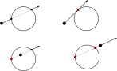
Valid Intersections
The criterion for deciding whether an intersection is valid also depends on the values t_\text{min} and t_\text{max} of the ray O + t \vec d.
Putting together everything we have said so far, an intersection for t = \tilde t is valid if and only if
t_\text{min} \leq \tilde t \leq t_\text{max}
(using < instead of ≤ doesn’t change anything).
If both intersections t_1 and t_2 satisfy this criterion, then the smaller of the two is considered, i.e., t_1 (visibility criterion).
Beyond Intersections
Once t and consequently the point P have been identified, the work is not yet finished.
To apply the BRDF f_r to the point, it is also necessary to know the normal \hat n to the surface.
Furthermore, in general, the BRDF of a surface depends on the exact point of intersection, which for a surface is usually indicated as a two-dimensional point (u, v).
Let’s look at these two aspects in detail, starting with the normal.
Normal of a Sphere
Given a point P, any radius is always normal to the surface of the sphere, so it is easy to determine the normal at point P:
\hat n_P = P - C,
where C is the center of the sphere.
However, there is an ambiguity in the sign: both P - C and C - P are normal to the surface. But should the normal be inward or outward?
Normal of a Sphere
The choice of the normal depends on the direction of arrival \vec d of the ray.
We can therefore check the sign of
\hat n \cdot \vec d = \left\|\hat n\right\|\cdot\left\|\vec d\right\|\,\cos\theta,
and if it is positive, we consider -\hat n instead of \hat n.
Intersection Point
Once the intersection point P between the sphere and the ray is determined, it is usually necessary to estimate the BRDF at P.
But it is inconvenient to do so if P is expressed in 3D coordinates!
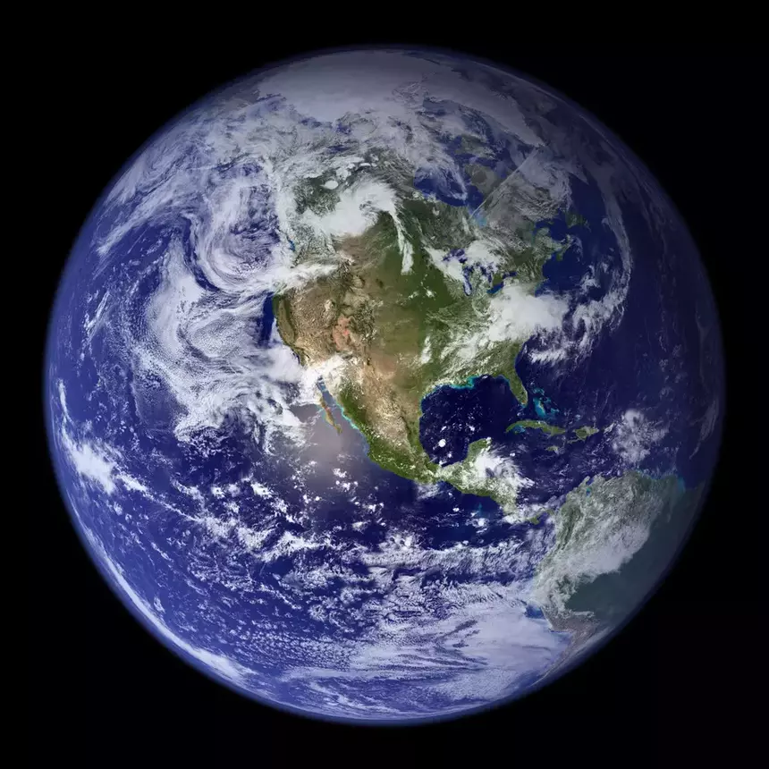
Intersection Point
Rather than the point P, it is necessary to know the position in two-dimensional coordinates on the surface of the sphere.
In the specific case of the sphere, we can use the latitude-longitude pair
In the general case of a surface S, we will always seek for two-dimensional parameterizations (u, v).
Surface of the Sphere
Given a point P on the surface of the sphere, we can derive the colatitude \theta and the longitude \phi using trigonometry:
\theta = \arccos p_z, \quad \phi = \arctan \frac{p_y}{p_x}.
The range of values \theta \in [0, \pi], \phi \in [0, 2\pi] is too specific for the sphere, so we can use this parameterization:
u = \frac\phi{2\pi} = \frac{\arctan p_y / p_x}{2\pi}, \quad v = \frac\theta\pi = \frac{\arccos p_z}\pi.
Planes
Infinite Plane
In affine geometry, a plane is defined by its normal vector \hat n and a point P_0 through which the plane passes:
(P - P_0) \cdot \hat n = 0,
where P is a generic point on the plane.
(In algebraic geometry, planes are represented by bivectors: calculations are much simpler, especially if you use projective geometric algebra!)
Standard Plane
Since we can exploit transformations, we study the particular plane that passes through the origin (P_0 = 0) and is generated by the x and y axes (i.e., it is perpendicular to the z axis).
In this case
(P - P_0) \cdot \hat n = 0\ \Rightarrow\ \vec P \cdot \hat e_z = 0,
which simplifies to the condition
P_z = 0.
Ray-Plane Intersection
The intersection between the plane and the ray O + t \vec d is therefore trivially simple: we simply require the z component of the point along the ray to be zero for some value of t.
The analytical solution is
O_z + t d_z = 0\ \Rightarrow\ t = -\frac{O_z}{d_z},
which is obviously valid only if d_z \not\approx 0, i.e., if the direction \vec d of the ray is not parallel to the xy plane.
Normals
The normal of the plane is obviously \pm \hat e_z, where the sign is determined by the same rule used for the sphere.
But in the case of the plane, the formula is even simpler: if \vec d is the direction of the ray, then the condition for changing the sign becomes
\vec d \cdot \hat n < 0\ \Rightarrow\ d_z < 0.
Parameterization of the Plane
Unlike the sphere, a plane is an infinite surface.
In this case, the plane is parameterized with periodic conditions:
u = p_x - \lfloor p_x \rfloor,\quad v = p_y - \lfloor p_y \rfloor,
where \lfloor \cdot \rfloor indicates the floor function, so that u, v \in [0, 1) as in the case of the sphere.
The entire surface of the plane is therefore the periodic repetition of the region [0, 1] \times [0, 1] (tile pattern).
Parameterization of the plane
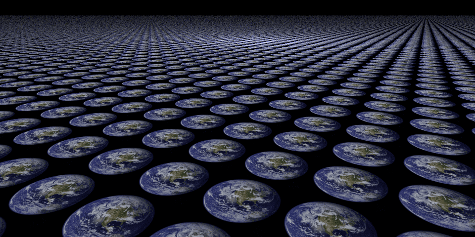
Constructive Solid Geometry
Constructive Solid Geometry
The shapes we have covered so far (spheres and planes) are relatively simple.
We will see in the future that arbitrarily complex shapes can be approximated with sets of triangles, but managing such complex geometry efficiently is a non-trivial task!
Today we present a simple technique to construct complex geometric shapes starting from simple shapes: Constructive Solid Geometry (CSG).
Set Operations
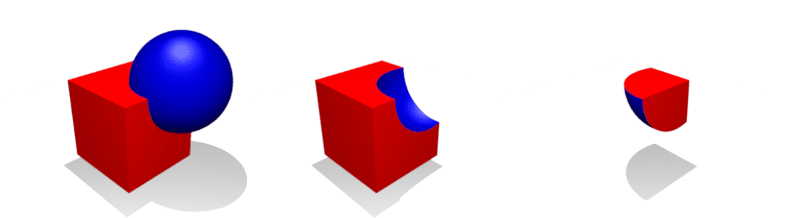
- Union
- Difference
- Intersection
Union
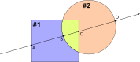
- The intersections with all the shapes are determined;
- The closest intersection is chosen, assigning it the BRDF of the corresponding shape.
- For semi-transparent materials, reflection and refraction are computed for all intersection points (A, B, C, D).
Difference
- The intersections with the shapes are determined;
- The intersections internal to shape #2 (C) and those on the surface of #2 that are not internal to #1 (D) are omitted.
Intersection
- The intersections with the shapes are determined;
- Only the intersections in one of the two shapes that are internal to the other shape are considered (point B intersects #2 and is internal to #1, C intersects #1 and is internal to #2).
Fusion / Merge
- It works like a union, but the internal points B and C are not considered.
- It is only useful for semi-transparent materials: reflection and refraction are computed only on A and D.
Hierarchies
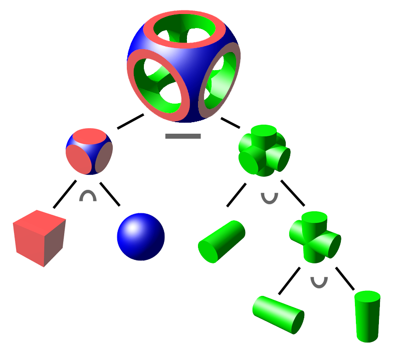
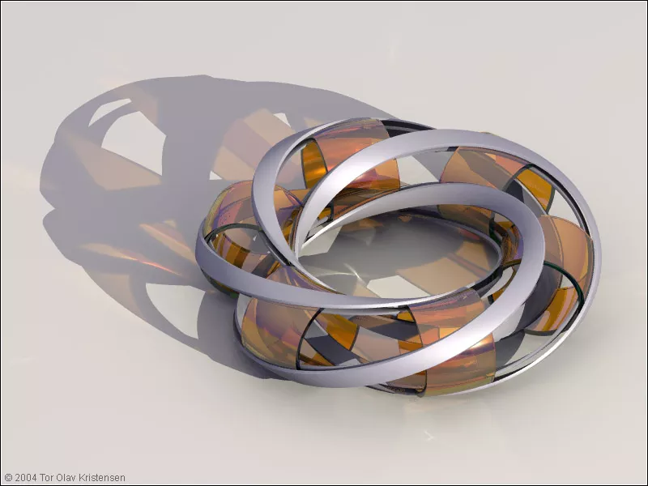
Villarceau Circles, by Tor Olav Kristensen (2004)
Triangles and quadrilaterals
3D Modeling
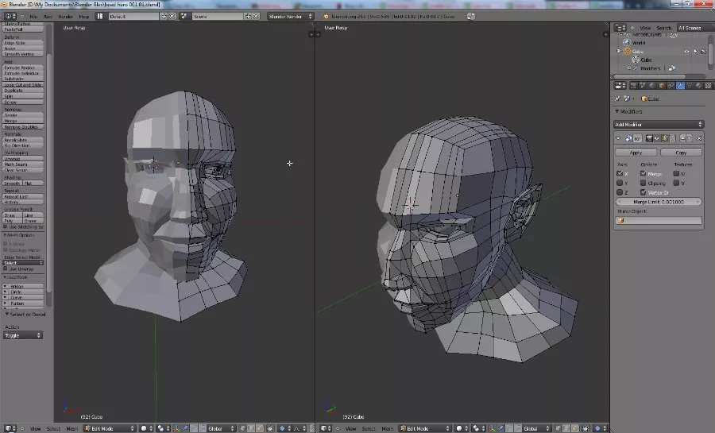
3D Scanners
Stanford bunny (1994)
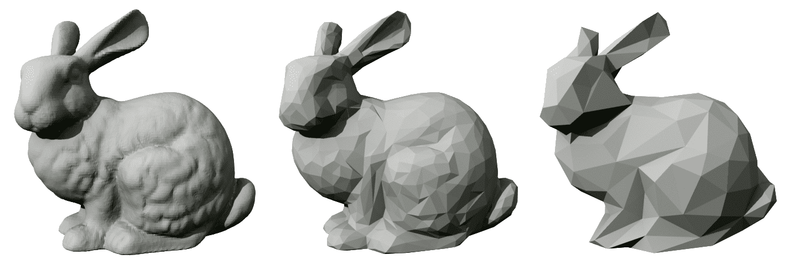
(Model obtained from the scan of a ceramic statuette)
Triangles
Triangles are a geometric shape widely used in 3D modeling and rendering programs, due to their many properties:
- They are the simplest planar surfaces (→ efficient to store).
- Their representation in space is unique (exactly one plane passes through three non-collinear points).
- Their surface is parameterizable in (u, v) coordinates in a very simple way.
- Complex surfaces can be represented as a union of multiple triangles.
Barycentric Coordinates
Barycentric coordinates were proposed by Möbius in 1827. They express the points of a plane passing through the points A, B, C by means of the expression
P(\alpha, \beta, \gamma) = \alpha A + \beta B + \gamma C,
where \alpha, \beta, \gamma \in \mathbb{R} are the barycentric coordinates.
Barycentric coordinates are very useful for characterizing the triangle with vertices A, B, C: the point P is inside the triangle if and only if
0 \le \alpha \le 1,\quad 0 \le \beta \le 1,\quad 0 \le \gamma \le 1, \quad \alpha + \beta + \gamma = 1.
Coordinates in Triangles
The condition \alpha + \beta + \gamma = 1 means that the points of a triangle are characterized by two degrees of freedom, as it should be for a two-dimensional surface.
Equality in the first three inequalities holds for the points along the edge of the triangle.
Using the last equality, a more meaningful form is obtained:
P(\beta, \gamma) = A + \beta(B - A) + \gamma(C - A) = A + \beta \vec v_{AB} + \gamma \vec v_{AC},
which expresses P as A plus a displacement towards B and one towards C.
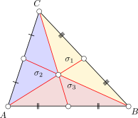
Coordinates in Triangles
It can be shown that the barycentric coordinates of a point P are related to the area \sigma of the triangle and to the areas of the three sub-triangles having as vertex the point P and two of the vertices:
\alpha = \frac{\sigma_1}\sigma = 1 - \frac{\sigma_2 + \sigma_3}\sigma, \quad \beta = \frac{\sigma_2}\sigma, \quad \gamma = \frac{\sigma_3}\sigma.
If a negative sign is assigned to the areas that are outside the triangle, these equations hold for any point on the plane in which the triangle lies.
Interactive Example
Quadrilaterals
We will focus on triangles today, but rendering programs also offer the possibility of defining quadrilaterals.
If we limit ourselves to parallelograms, they can be represented as the union of a vertex P and two vectors \vec v and \vec w; in this way, the results that we will show today are easily extendable to them as well:
Ray Intersection
Let’s now see how to use barycentric coordinates to efficiently calculate the intersection between a triangle and a ray (Möller-Trumblore algorithm).
Unlike what we did with spheres and planes, in this case we will not adopt a simplified reference system. The reason will be clear when we explain triangle meshes.
We will therefore identify a triangle by the coordinates of the three points A, B, C (nine floating-point values).
The Analytical Problem
Consider the ray r(t): O + t \vec d and the generic point P(\beta, \gamma) of the triangle. The intersection is given by
A + \beta (B - A) + \gamma (C - A) = O + t \vec d,
with the constraints \beta \geq 0, \gamma \geq 0, \beta + \gamma \leq 1.
We rearrange the equation to isolate the the three unknowns \beta, \gamma and t on the left-hand side:
\beta (B - A) + \gamma (C - A) - t \vec d = O - A.
Matrix Form
The equation we obtained is
\beta (B - A) + \gamma (C - A) - t \vec d = O - A,
which is a vector equation in the three components x, y, z.
In matrix form, the system can be rewritten as follows:
\begin{pmatrix} b_x - a_x& c_x - a_x& -d_x\\ b_y - a_y& c_y - a_y& -d_y\\ b_z - a_z& c_z - a_z& -d_z\\ \end{pmatrix} \begin{pmatrix} \beta\\\gamma\\t \end{pmatrix} = \begin{pmatrix} o_x - a_x\\o_y - a_y\\o_z - a_z \end{pmatrix}.
Analytical Solution
The solution depends on the determinant of the matrix M:
\det M = \det \begin{pmatrix} b_x - a_x& c_x - a_x& d_x\\ b_y - a_y& c_y - a_y& d_y\\ b_z - a_z& c_z - a_z& d_z\\ \end{pmatrix},
which must be different from zero, otherwise the ray is parallel to the plane of the triangle.
The solution is easily obtained with Cramer’s rule, which is inefficient in the general case but adequate for 3×3 matrices as the one above.
Analytical Solution
Obviously, once the solution is obtained it is necessary to verify that
t_\text{min} < t < t_\text{max}, \quad 0 \leq \beta \leq 1, \quad 0 \leq \gamma \leq 1.
The normal of the triangle can be easily obtained from the cross product between the two vectors aligned with the sides:
\hat n = \pm (B - A) \times (C - A),
where the sign is determined by the direction of the ray.
The (u, v) coordinates can be set equal to (\beta, \gamma).